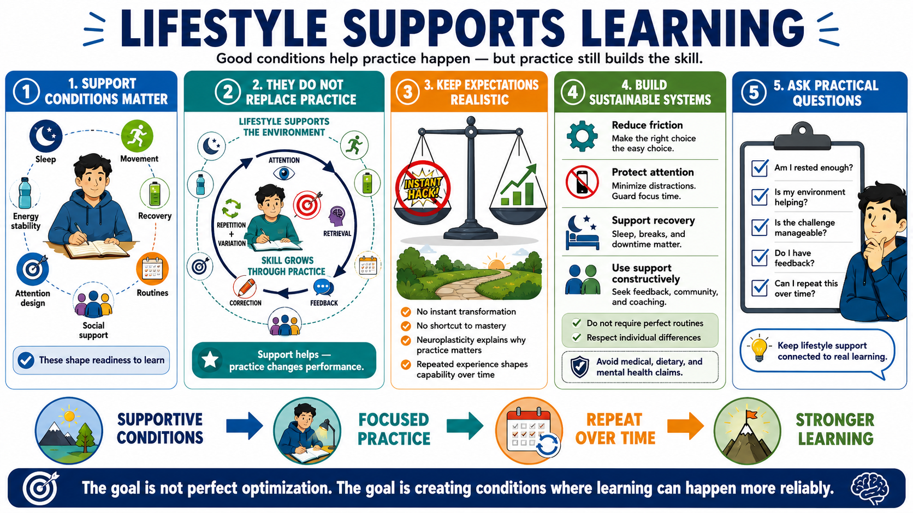

Course Summary and Key Takeaways
Connecting to LMS... Progress: in progress

Narration
Lifestyle factors can influence the conditions for learning, adaptation, and performance, but they do not replace focused practice, feedback, and time. Sleep, movement, energy stability, recovery, attention design, useful variety, routines, and social support all shape whether learners are ready to engage and keep engaging.
The course emphasized realistic expectations. Neuroplasticity is not a shortcut or a promise of instant transformation. It is a reason that repeated experience and practice can matter. Lifestyle modulators help create the environment around practice. The skill still grows through attention, retrieval, feedback, correction, and repetition with variation.
Strong support systems are sustainable. They do not demand perfect routines or constant optimization. They make learning easier to start and continue by reducing friction, protecting attention, supporting recovery, and using social systems constructively. They also respect individual differences and avoid medical, dietary, or mental health claims that belong with qualified professionals.
The goal is not perfect optimization. The goal is creating conditions where deliberate practice and learning can happen more reliably. A practical learner asks: am I rested enough for this task, is my environment helping, is the challenge manageable, do I have feedback, and can I repeat this routine over time? Those questions keep lifestyle support connected to real learning.